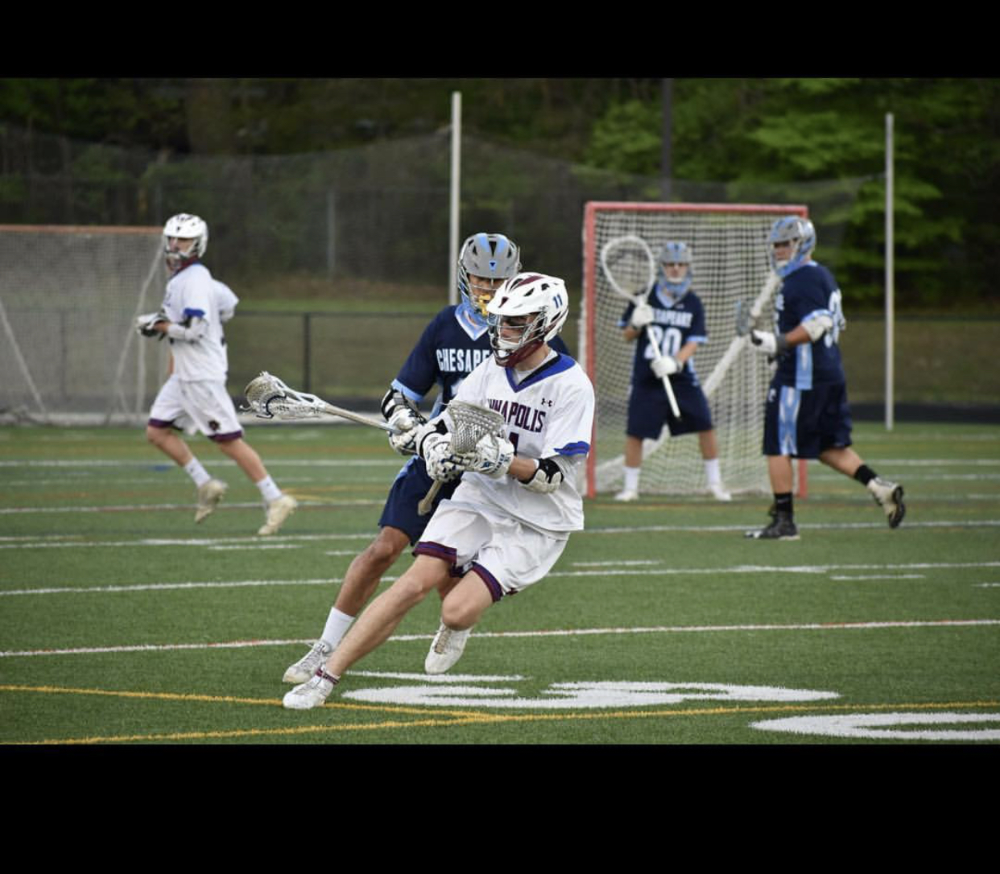
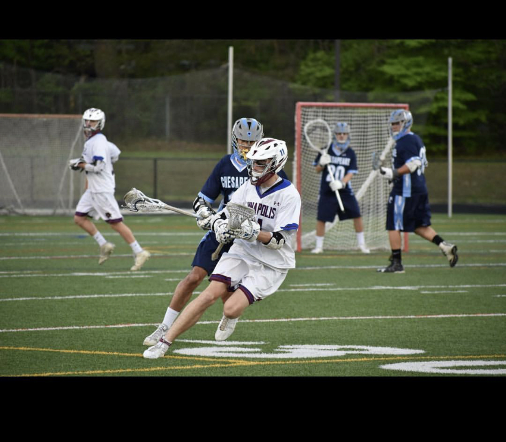

| |
|
|
|
My name is Owen Madsen. I am a junior here at URI from Annapolis, Maryland. I am a communications major hoping to pursue and obtain a minor in computer science. This class will hopefully just be the beginning of my computer science career as it is already gaining my interest!
I enjoy surfing and having fun with friends in my spare time.  I love the Los Angeles Chargers although they were much better in San Diego in my opinion. I am a huge wizards fan even though they are awful, their backcourt will always have a place in my heart.  I have 3 siblings including 2 brothers and an older sister who actually just graduated with a Computer Science Degree who now works for Booze Allen Hamilton based out of their D.C. office, and she's having a wonderful time. Can't wait to learn more.
I love the Los Angeles Chargers although they were much better in San Diego in my opinion. I am a huge wizards fan even though they are awful, their backcourt will always have a place in my heart.  I have 3 siblings including 2 brothers and an older sister who actually just graduated with a Computer Science Degree who now works for Booze Allen Hamilton based out of their D.C. office, and she's having a wonderful time. Can't wait to learn more.